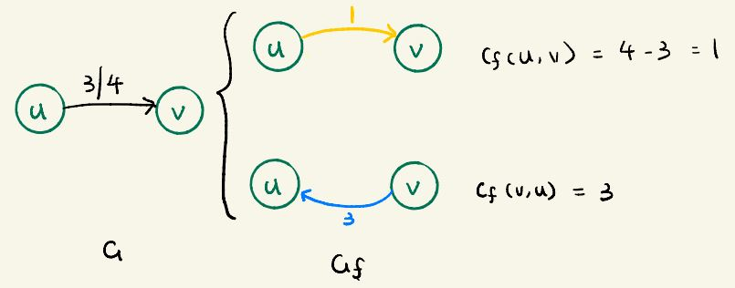
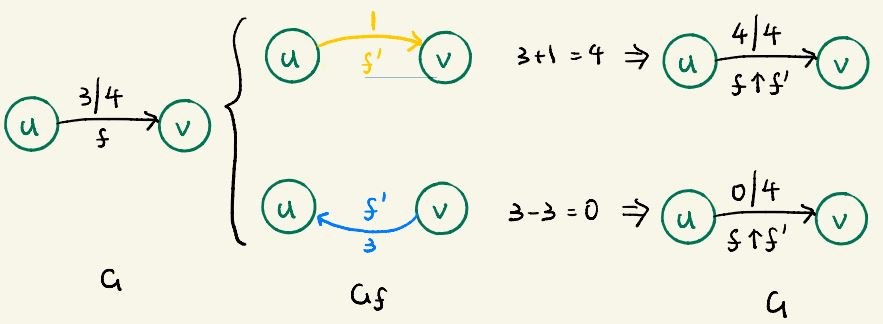
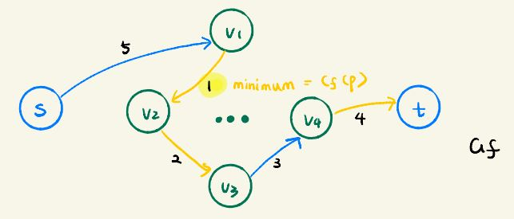
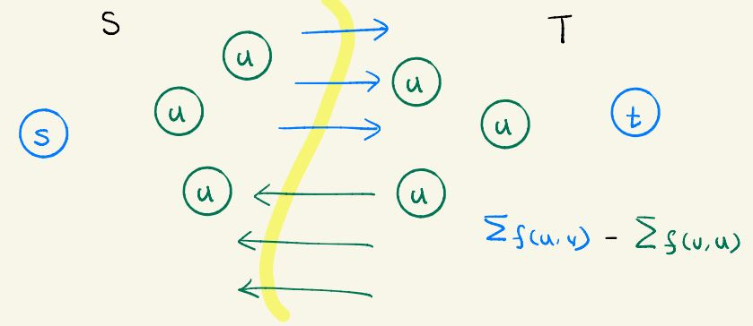

- Don't send anything back in a loop - that takes capacity
- If there exist any path that we can fill in more capacity - fill more
Intuition - How to make the flow larger?
Residual Network
Residual Network Introduction: Represent how we can change flow in on the edges of G, notation Gf
How much can we change on the flow?
- Send more on this edge? The possible amount to send more is based on current flow but not exceed current capacity
cf(u,v) = c(u,v) - f(u,v)
- When already sent some flow, what about send less(similar to send the flow back)?
The amount we can send back is same as current flow, in reversed direction.
cf(v,u) = f(u,v)
- Otherwise when there's no edge in G, there's also no change of flow
Residual Network definition:
Given a flow network G=(V,E) and a flow f. The residual network of G induced by f is Gf=(V, Ef), where
Ef = { (u,v) ∈ V x V: cf > 0 } (Click to see explaination of each part, refresh if a bad color appears)
The edges in this residual graph are: All possible changes in flow as seen above
Build a residual network here:
SV1: 16 - 11 = 5
SV2: 13 - 8 = 5
V2V1: 4 - 1 = 3
V1V3: 12 - 12 = 0
V3V2: 9 - 4 = 5
V2V4: 14 - 11 = 3
V4V3: 7 - 7 = 0
V3T: 20 - 15 = 5
V4T: 4 - 4 = 0
Reverse each flow.
Remove the 0s
Final network
Augmentation: A flow in residual network Gf is a hint for adding flow in G
If f is a flow in G and f' is a flow in Gf, we define augmentation:
(f ↑ f') = f(u,v) + f'(u,v) - f'(v,u) (Click to see explaination of each part, refresh if a bad color appears)
The amount we already sent in flow f from u to v The amount we send more in f' from u to v The amount we send back in f' from v to u
Lemma 26.1 |f ↑ f'| = |f| + |f'|
Augmenting Path: A simple path from s to t in the residual network Gf
Residual Capacity: The maximum amount by which we can increase the flow on each edge in an augmenting path p.
cf(p) = min { cf(u, v): (u, v) is on p } (Click to see explaination of each part, refresh if a bad color appears)
The maximum amount we can increase without violating anything on this path is to incerase it by smallest residual value of all edges All the edges on path
Cuts of flow networks
Cut: A cut(S, T) of flow network G is a partition of V into 2 parts:
S, which contains supply s;
T, which contains target t
Net Flow: If f is a flow, the net flow(S, T) across the cut(S, T) is defined to be:
f(S,T) = ∑ u ∈ S ∑ v ∈ T f(u,v) - ∑ u ∈ S ∑ v ∈ T f(v,u) (Click to see explaination of each part, refresh if a bad color appears)
All nodes in part S All nodes in part T Sum up the flow from nodes in S to nodes in T All nodes in part S All nodes in part T Sum up the flow from nodes in T to nodes in S
Net Flow on Example cuts:
(12 + 11) - (4) = 19
(11 + 8) - (0) = 19
(15 + 4) - (0) = 19
(11+1+11+15) - (12+7) = 19
Observation(Lemma 26.4): The net flow acorss any cut is the same, which equals the value of the flow
Capacity of cut: The capacity of cut(S, T) is sum of capacity of edges from node in set S to T
c(S,T) = ∑ u ∈ S ∑ v ∈ T c(u,v) (Click to see explaination of each part, refresh if a bad color appears)
All nodes in part S All nodes in part T Sum up the capacity from nodes in S to nodes in T
Capacity on example cuts:
12 + 14 = 26
16 + 13 = 29
20 + 4 = 24
16 + 4 + 14 + 20 = 54
Minimum Cut: A cut whose capacity is minimum over all cuts of the network
Corollary 26.5: The value of any flow f in a flow network G is bounded from above by the capacity of any cut of G.
Max-flow min-cut Theorem
Content: If f is a flow in a flow network G=(V,E) with source s and sink t, then the following conditions are equivalent:
1. f is a maximum flow in G
2. The residual network Gf contains no augmenting paths.
3. |f| = c(S,T) for some cut(S,T) of G.
Proof: 1 ⇒ 2
Suppose for the sake of contradiction that f is maximum flow in G, but Gf has an augmenting path p.
Then, by Corollary 26.3, if we augment f by fp we can get a flow |f ↑ fp| strictly greater than |f|
That contradicts the the assumption that f is a maximum flow
Proof: 2 (No augmenting path) ⇒ 3 (Flow = capacity of some cut)
Suppose Gf has no augmenting path, that is same as Gf contains no path from s to t.
Define S={ v ∈ V: there exist a path from s to v in Gf }
And T - V - S, that is the vertices for which there's no path from s to them
This partition must be a cut, since we already know there's no path from s to t thus t is in set T.
Consider a pair of vertices u ∈ S and v ∈ T.
If there's an edge from u to v, we must have f(u,v) = c(u,v)
Because if we have f(u, v) ≤ c(u, v), this flow can possibly be raised
If it is possible to raise it, then there's an edge cf from u to v = c(u,v) - f(u,v)
In this way v is reachable from u, which means v is reachable from s, and v should be in set S,
which contradicts the assumption that v is in T
If there's an edge from v to u, we must have f(v,u) = 0
Because if we have f(u, v) ≠ 0, it is possible to send flow back from u to v in cf
Same idea, in this way v is reachable from s.
Thus we have:
f(S,T) = ∑ u ∈ S ∑ v ∈ T f(u,v) - ∑ u ∈ S ∑ v ∈ T f(v,u)
Network flow definition
= ∑ u ∈ S ∑ v ∈ T c(u,v) - ∑ u ∈ S ∑ v ∈ T 0
We just proved f(u,v) = c(u,v) We proved f(v,u) = 0
= c(S, T)
By definition of cut
Then, by Lemma 26.4, |f| = f(S,T) = c(S,T)
Proof: 3 (Flow = capacity of some cut) ⇒ 1 (Is a max flow)
By by Corollary 26.5 |f| ≤ c(S, T) for all cuts (S, T). The condition |f| = c(S, T) implies that f is a maximum flow.
Yuye.Jiang@tufts.edu Comp150-ALG-Summer2020